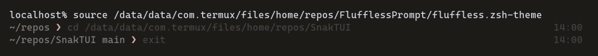
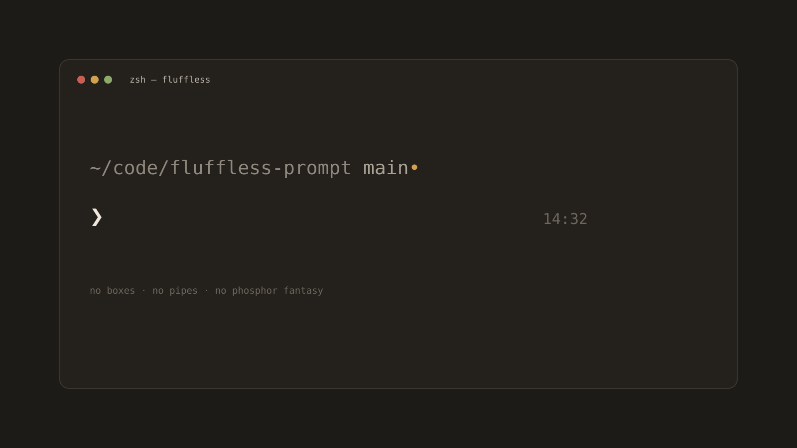

← Back to family hub

Oh My Zsh theme
A quiet prompt for Oh My Zsh.
Directory, Git state, exit codes and a small clock. No boxes, no glyphs, no performance.

cp fluffless.zsh-theme ~/.oh-my-zsh/custom/themes/
# ~/.zshrc: ZSH_THEME="fluffless"
source ~/.zshrc

- One fileno plugins, no glyph dependency
- Git awarebranch and dirty marker
- Fail loudexit codes replace the arrow
- Not retrowarm neutrals, no phosphor cosplay